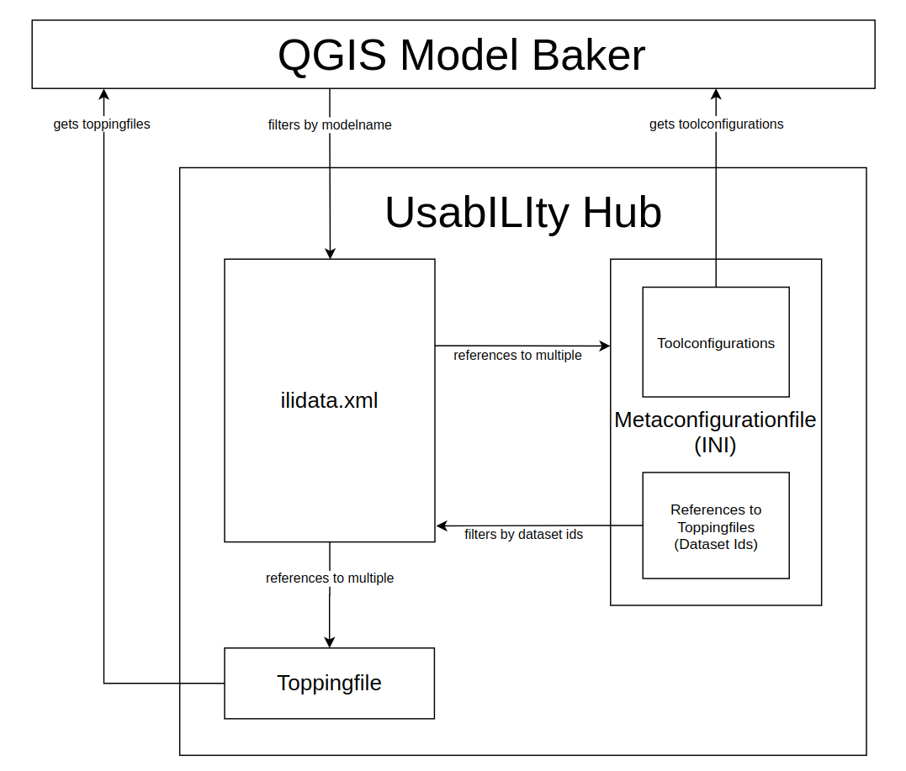
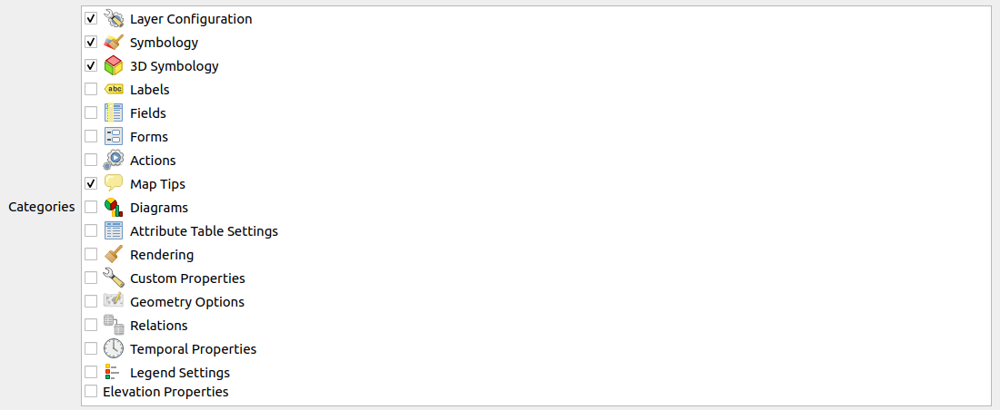
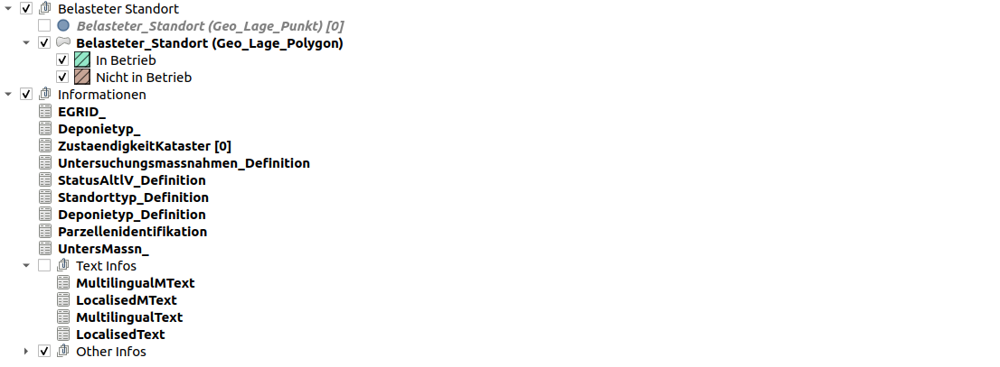
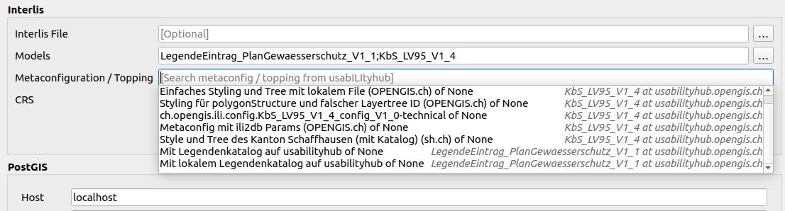
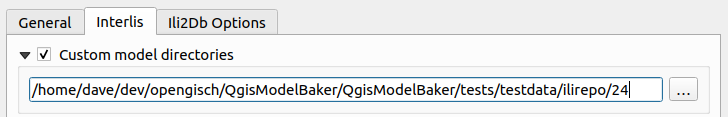

UsabILIty Hub ist Geoinformationssystemübergreiffend. Unterschiedliche Tools können UsabILIty Hub integrieren.
Aktuell besteht eine Implementierung für den QGIS Model Baker. Weitere können hinzugefügt werden.
Umsetzung im QGIS Model Baker
Workflows:
Anhand eines Modellnamens werden im ilidata.xml Pfade zu Metakonfigurationsfiles gefunden. Diese Metakonfigurationsfiles enthalten, neben Konfigurationsparameter, DatasetMetadata-Ids. Anhand dieser DatasetMetadata-Ids werden im ilidata.xml die Pfade zu den Toppingfiles gefunden.
Andere Tools verwenden einen anderen Workflow. So wird beispielsweise dem ili2db das Metakonfigurationsfile übergeben. Dort ist in der Metakonfiguration dann auch das Modell definert.

Ablauf
- User gibt Modellname in der Maske ein
- Das ilidata.xml wird anhand des Modellnamens nach Links zu Metakonfigurationsfiles geparst
- Die Benutzerin wählt ein Metakonfigurationsfile aus, dieses wird heruntergeladen
- Die Konfigurationen werden aus dem Metakonfigurationsfile gelesen
- Die Konfigurationen werden in der Datenstrukturerstellung berücksichtigt
- Die DatasetMetadata-Ids zu den Toppingfiles werden aus dem Metakonfigurationsfile gelesen
- Das ilidata.xml wird anhand der DatasetMetadata-Ids nach Links zu Toppingfiles geparst
- Die Toppingfiles werden heruntergeladen
- Die Informationen werden aus den Toppingfiles gelesen und in die Projekt-Generierung miteinbezogen
ili2db Konfigurationen
Generelle Handhabung
Konfigurationen für ili2db werden im Metakonfigurationsfile definiert.
[ch.ehi.ili2db]
defaultSrsCode = 2056
smart2Inheritance = true
strokeArcs = false
importTid = true
ili2db kann so aufgerufen werden:
ili2db --metaConfig ilidata:metconfigId --schemaimport --db....
ili2db --metaConfig ilidata:metconfigId --import --db....
ili2db --metaConfig ilidata:metconfigId --import --db.... data.xtf
ili2db --metaConfig ilidata:metconfigId --export --db.... data.xtf
…oder mit lokalem Metakonfigurationsfile:
ili2db --metaConfig localfile.ini --import --db.... data.xtf
Umsetzung im QGIS Model Baker
Die Funktionalität, dass die Parameter in die Eingabemaske geladen werden, ist soweit implementiert (v6.5.0). Ansonsten beschreibt dieser Absatz den SOLL-Zustand. Denn die Übergabe der Metakonfiguration sowie das übergeben von false-Parametern ist von Seite ili2db noch nicht unterstützt.
Einerseits werden beim Aufruf von ili2db durch den QGIS Model Baker Parameter automatisch im Hintergrund gesetzt und andererseits können in der Eingabemaske des QGIS Model Baker Parameter vom Benutzer konfiguriert werden. Zusätzlich soll nun die betreffende Metakonfigurationsdatei dem ili2db übergeben werden. Doch Parameter, die dem ili2db direkt übergeben werden, übersteuern die Konfigurationen des übergebenen Metakonfigurationsfile.
QGIS Model Baker liest die ili2db Parameter aus dem Metakonfigurationsfile. Die Parameter, die über die Eingabemaske des QGIS Model Baker gesetzt werden können (wie zBs. --strokeArcs, --iliMetaAttrs (für TOML) oder auch --models), werden vom Metakonfigurationsfile in die Eingabemaske geladen. Der Benutzer kann diese nun anpassen. Der QGIS Model Baker übergibt dem ili2db Aufruf nun die Metakonfigurationsdatei und die Parameter aus der Eingabemaske (ob angepasst oder nicht). Falls also die Parameter in der Metakonfigurationsdatei aufgeführt waren, dann aber in der Eingabemaske deaktiviert wurden, werden sie dem ili2db als “false” übergeben.
Die Parameter, die der QGIS Model Baker im Hintergrund setzt (wie zBs. --createFkIdx, --coalesceMultiPoint), werden weiterhin gesetzt. Doch können sie vom Metakonfigurationsfile übersteuert werden. Wenn aber zum Beispiel im Metakonfigurationsfile solche Parameter nicht erwähnt sind (weil sie möglicherweise nicht gesetzt werden sollen), dann werden sie auch nicht mit “false” übersteuert.
Ausnahme bietet im Metakonfigurationsfile ein Setting wie onlyUseMetaConfigParams. Wenn dies gesetzt ist, dann sollen nur die im Metakonfigurationsfile konfigurierten Parameter gesetzt werden und keine anderen.
Referenzen auf andere Modelle
Anhand der ili2db kann von einem Metakonfigurationsfile auf andere Modelle referenziert werden. Wenn die Metakonfigurationsfile der Wert models=KbS_LV95_v1_4;KbS_Basis enthält, dann wird dies auch in der QGIS Model Baker Eingabemaske so angepasst. Natürlich wird daraufhin wieder eine Suche nach möglichen Metakonfigurationsfiles auf UsabILIty Hub gestartet, gemäss den aktuell gesetzten Modelle. Siehe dazu auch “Import mehrerer Models und ihre Toppings”
Toppings und ihre Konfiguration
Toppingfiles sind Files, auf die in der Metakonfiguration referenziert wurde und die Konfigurationsinformation des GIS Projektes enthalten. Es können also Formularkonfigurationen, Style-Attribute, Legendendarstellung sowie Datenfiles sein. Für jedes Tool können individuelle Toppingfiles verwendet werden.
Vom QGIS Model Baker unterstützte Toppingfiles:
- QML Files für Layerkonfigurationen<>
- YAML Files für Legendendarstellung und Layerreihenfolge
- XTF/ITF Files für Datenimport
QML
Für Layereigenschaften wie Formularkonfigurationen, Symbologie etc. werden QML Files als Toppingfiles geladen.

Die QML Toppingfiles werden im Metakonfigurationsfile den Layern zugewiesen.
[qgis.modelbaker.ch]
"Belasteter_Standort (Geo_Lage_Polygon)"=file:toppings_in_modelbakerdir/qml/opengisch_KbS_LV95_V1_4_001_belasteterstandort_polygon.qml
"Belasteter_Standort (Geo_Lage_Punkt)"=ilidata:ch.opengis.topping.opengisch_KbS_LV95_V1_4_001
ZustaendigkeitKataster=ilidata:ch.opengis.configs.KbS_LV95_V1_4_0032
Legende und Darstellungsreihenfolge (YAML)
Es können Informationen zur Legendengruppierung und Darstellungsreihenfolge in einem Toppingfile enthalten sein. Die DatasetMetadata-Id wird im Metakonfigurationsfile über den Parameter qgis.modelbaker.layertree definiert.
Das File ist in YAML geschrieben:
legend:
- "Belasteter Standort":
group: true
checked: true
expanded: true
mutually-exclusive: true
mutually-exclusive-child: 1
child-nodes:
- "Belasteter_Standort (Geo_Lage_Punkt)":
featurecount: true
- "Belasteter_Standort (Geo_Lage_Polygon)":
expanded: true
- "Informationen":
group: true
checked: true
expanded: true
child-nodes:
- "EGRID_":
- "Deponietyp_":
- "ZustaendigkeitKataster":
featurecount: true
- "Untersuchungsmassnahmen_Definition":
featurecount: false
- "StatusAltlV_Definition":
- "Standorttyp_Definition":
- "Deponietyp_Definition":
- "Parzellenidentifikation":
- "UntersMassn_":
- "Text Infos":
group: true
checked: false
expanded: true
child-nodes:
- "MultilingualMText":
- "LocalisedMText":
- "MultilingualText":
- "LocalisedText":
- "Other Infos":
group: true
checked: true
expanded: false
child-nodes:
- "StatusAltlV":
- "Standorttyp":
- "UntersMassn":
- "Deponietyp":
- "LanguageCode_ISO639_1":
layer-order:
- "Belasteter_Standort (Geo_Lage_Polygon)"
- "Belasteter_Standort (Geo_Lage_Punkt)"
Legende
Die Legende wird anhand einer Baumstruktur im YAML Format beschrieben.
Top-Level Eintrag ist legend. Dieser Eintrag wird nicht in der Legende angezeigt.
Darauf können Gruppen oder auch Layer folgen. Es gelten folgende Parameter für beide Typen:
checked = true/falsedefiniert, ob der Knoten sichtbar ist oder nichtexpanded = true/falsedefiniert, ob der Knoten ausgeklappt ist oder nichtfeaturecount: truedefiniert, ob die Anzahl Features angezeigt werden soll oder nicht
Gruppen müssen als solche definiert werden mit dem Parameter group: true. Ansonsten wird angenommen, dass es ein Layer ist. Die Gruppen sollten den Parameter child-nodes enthalten, wo Untergruppen und Layer definiert werden können.
Zusätzlich haben die Gruppen noch die “Mutually-Exclusive” Eigenschaft. Dies bedeutet, ob sich die Untergruppen und Layer gegenseitig ausschliessen. Das heisst, dass nur ein Kindelement auf einmal sichtbar sein kann.
mutually-exclusive: truewenn nur ein Kindelement auf einmal angezeigt werden soll.mutually-exclusive-child: 0das Kindelement, das angezeigt werden soll.
Das oben abgebildete YAML File resultiert in eine Legendenstruktur in QGIS

Darstellungsreihenfolge
Die Darstellungsreihenfolge wird als einfache Liste definiert.
layer-order:
- "Belasteter_Standort (Geo_Lage_Polygon)"
- "Belasteter_Standort (Geo_Lage_Punkt)"
Laden mehrerer Models mit mehreren Legendenstrukturen
Layer mit der gleichen Datenquelle werden bei erneutem Generieren des Projektes nicht doppelt hinzugefügt. Neue Layer und Untergruppen werden - sofern möglich - in bereits existierende Gruppen geladen. Ansonsten werden Geometrielayer oberhalb und die Gruppen “tables” und “domains” unterhalb hinzugefügt. Legendenstrukturen aus mehreren Toppingfiles werden also zusammengefügt.
Kataloge und Transferfiles
Kataloge und Transferfiles (und andere ITF/XTF) können ebenfalls als Toppingfiles geladen werden. Die DatasetMetadata-Ids werden im Metakonfigurationsfile über den globalen Parameter ch.interlis.referenceData definiert. Es können mehrere Ids und Filepfade angegeben werden (separiert durch ;).
Diese Datenfiles werden anschliessend an den Schemaimport mittels einzelner ili2db Kommandos importiert.
Aufgrund der Einhaltung der Best Practice werden die Datenfiles nicht mit einem
importund dem Parameter--doschemaimportgeladen, sondern eines nach dem andern.
Import mehrerer Models und ihre Toppings
Momentan werden bei einer Liste von “LegendeEintrag_PlanGewaesserschutz_V1_1;KbS_LV95_V1_4;KbS_Basis_V1_4” die Metakonfigurationsfiles für all diese Modelle aufgelistet.  Es kann dann aber nur eines ausgewählt werden. Möchte man mehrere Metakonfigurationsfiles auswählen, muss man die Models nacheinander importieren.
Best Practice
Am besten macht man ein Metakonfigurationsfile, das für den Import aller Modelle gilt. Und um das ganze noch angenehmer zu gestalten, kann man auch das zusätzliche Model im Metakonfigurationsfile konfigurieren. Gilt ein Metakonfigurationsfile für den Import beider Modelle “KbS_LV95_V1_4;KbS_Basis_V1_4”, kann man auch beide Modelle darin konfigurieren:
[ch.ehi.ili2db]
models = KbS_Basis_V1_4;KbS_Basis_V1_4
Somit wird das Metakonfigurationen anhand beider Modellnamen gefunden und beim einlesen wird “KbS_LV95_V1_4;KbS_Basis_V1_4” in die Eingabemaske von QGIS Model Baker geladen.
Lokales Repo verwenden
Es kann für Testzwecken nützlich sein, wenn man ein lokales Repository verwenden kann. Dies wird genauso wie immer konfiguriert. ilidata.xml und ilimodels.xml werden darin gesucht und geparst.
